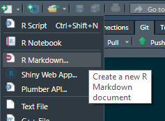
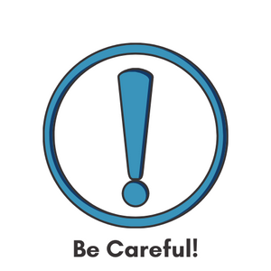
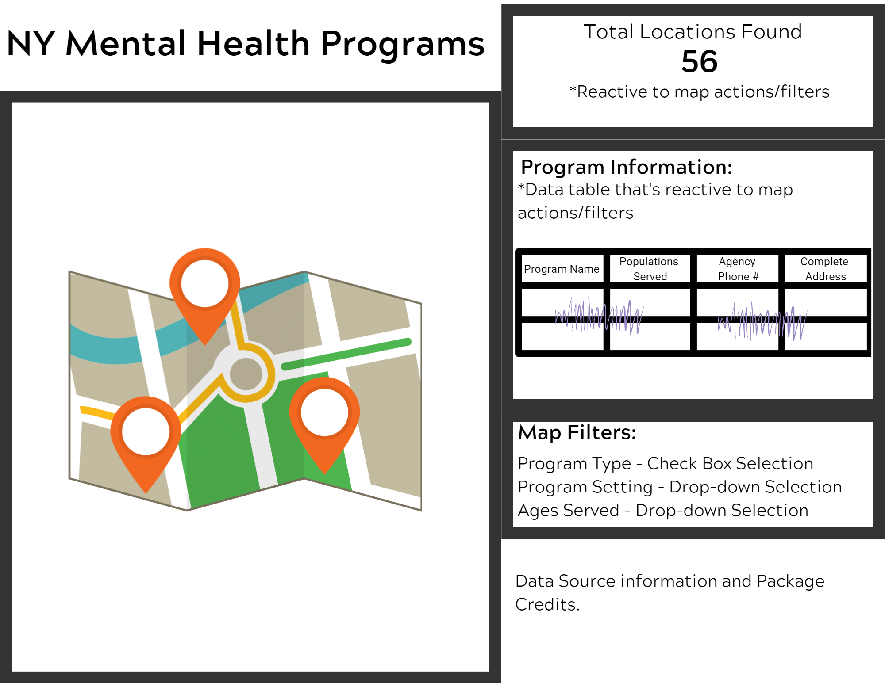

![]()
# Installing the flexdashboard package===
install.packages("flexdashboard") Don’t have time to read and just want the source code? Click Here
The Problem: You want to put cleaned/prepared data into an interactive dashboard but you can’t or don’t want to code with Shiny at the moment.
The Fix: You need to use the flexdashboard package and create a markdown document instead.
Getting Started:
To start, we’ll look at a cleaned and prepped dataset that includes a mix of categorical and geographic variables. The data is publicly sourced from the New York State Department of Mental Health and contains information for New York State’s Local Mental Health Programs.
For this example, I’ve already cleaned and prepped the set. If you’re interested, you can view the cleaning script and geoprocessing* script. Our main purpose for this project is to create a dashboard with a map, filters for the map, and a data table that let’s us view selected data points.
*The geoprocessing coding in this script came from Dmitry Kisler’s article “OSM Nominatim with R: getting Location’s Geo-coordinates by its Address” Check it out to learn more about the process if you’d like!
If you’d like to follow along within the R project files you can download them from the Tidy Trekker Github Repository. Be sure to fully extract the ZIP. folders for proper access. You can also download the data set used and load it into your own session for practice.
Direct download link for this post’s example data
Creating the Markdown File
In order to create the dashboard, we need to write out code in an R Markdown file (.RMD) instead of an R Script (.R). If you don’t have the flexdashboard package installed already you’ll want to do that first:
After installing flexdashboard, you should be able to create a new markdown document with the flexdashboard template. You can do so by going to create a new markdown document like you normally would…

Creating a new markdown document in the R Studio IDE
…but instead of accepting the default document settings, click on the “From Template” option in the left pane, select the “Flex Dashboard” template in the right pane, and finally click “OK” at the bottom:
![A screenshot of the New R Markdown Template menu in the R Studio IDE. The menu consists of two panes. One on the left and right. The left pane has four markdown options: 'Document', 'Presentation', 'Shiny', and 'From Template'. The 'From Template' option in highlighted and selected. The right pane has various Template options with 'Flex Dashboard' at the top which is selected and highlighted. The bottom of the screen shot has three buttons. In the right hand bottom corner, the button reads 'Create Empty Document.' In the bottom left hand corner are two buttons that read 'OK' and 'Cancel' from left to right.](images/snip2.png)
R Markdown Template Menu in R Studio IDE
You’ll now see a pre-generated Flex Dashboard markdown script! You can use this for practice. If you have some time and are interested, play around with the syntax and get a feel for how changes to this template will affect the final knitted document. You can read up more about Flex Dashboard basics here. If you want more information about different layout options you can find them here. For this guide, we’ll be using the “Chart Stack (fill)” layout.
Setting the YAML
The first part of the markdown code that we see is the YAML (Yet Another Markup Language or YAML Ain’t Markup Language) Header. Without getting bogged down with an explanation, this is basically a special block of code that’s going to tell R how to process our markdown document. It’s the “magic battery” that’s needed to power the translation process that converts code to pretty documents. For this project our YAML looks like this:
---
title: "New York State's (Brooklyn,NY) Local Mental Health Programs"
output:
flexdashboard::flex_dashboard:
vertical_layout: fill
source_code: embed
css: scripts/nycmhstyle.css
---The Components of this YAML:
Title: This is the string that will show up in the top left corner of your dashboard.
Output: This is where the document type is set. You can set options for this on the same line, or underneath it (shown here.)
Output Options: In this YAML, our options are underneath the “output” line and are indented. The indents are extremely important. If these options aren’t indented in a hierarchical (ordered) fashion, it will not work! Let’s look at them further:

Please be mindful that the YAML output options are properly ordered and indented! You’ll know if it’s not because you will get an error.
flexdashboard::flex_dashboard: Note how this is tabbed or indented only once under the output option. This tells R we want this document processed as a Flex Dashboard.
vertical_layout: fill: Also note how it’s indented/tabbed again. This tells R that these are options that we want applied to this dashboard. This option tells R that we want the dashboard to fill the page vertically. This option can also be set to “scroll.” You can always play around with it and see which is best for your needs.
source_code: embed: This option tells R that we want to share our source code on the dashboard. This will appear as a button in the top right corner of the dashboard. If we have source code elsewhere on the internet (like GitHub) you can replace “embed” with the actual URL as a string (with quotation marks - “https://github.com/user/code”)
css: scripts/nycmhstyle.css: This option tells R that we want to use an external css file to change the appearance of our flexdashboard. This file is included on the GitHub repository if you’re interested.
Configuring the “Setup” Code Chunk
Now that the YAML is set, we need to load in all the packages we’ll use and our data.
#Library load in.#
library(flexdashboard)
library(knitr)
library(tidyverse)── Attaching core tidyverse packages ──────────────────────── tidyverse 2.0.0 ──
✔ dplyr 1.1.4 ✔ readr 2.1.5
✔ forcats 1.0.0 ✔ stringr 1.5.2
✔ ggplot2 3.5.2 ✔ tibble 3.3.0
✔ lubridate 1.9.4 ✔ tidyr 1.3.1
✔ purrr 1.1.0
── Conflicts ────────────────────────────────────────── tidyverse_conflicts() ──
✖ dplyr::filter() masks stats::filter()
✖ dplyr::lag() masks stats::lag()
ℹ Use the conflicted package (<http://conflicted.r-lib.org/>) to force all conflicts to become errorslibrary(leaflet)
library(leafem)
library(crosstalk)
library(DT)
library(summarywidget)
library(raster)Loading required package: sp
Attaching package: 'raster'
The following object is masked from 'package:dplyr':
selectThere’s a good amount of packages here. I’ve already mentioned flexdashboard, leaflet, crosstalk, DT, and summary widgets, but there’s a few more needed for our particular example: - knitr: Helps with markdown/report generation - leafem: Gives extensions and additional options for the leaflet (map) package. - tidyverse: Group of packages used to aid with data wrangling/manipulation - raster: Helps with geographical data analysis and modelling.
After loading in all of the libraries, we can now load in our data. The data for this project is stored as an .RDS object. The original csv file was converted to an .RDS object to ensure reproducibility and maintain integrity of the data’s structure. The readRDS() function will automatically open the object and restore it as a data frame with all original components intact. This code stores the data frame as MHprograms
#Loading the datasets into the environment.#
#MH programs with geocodes#
MHprograms <- readRDS("data/mhprogramsnyc.RDS")Now that our data is in the environment, we can use the crosstalk package to translate our data into a shared data object. This will allow interactivity between our dashboard components.
#Converting data frames into shared data objects with crosstalk. This will allow the map, filters, and tables to be interactive and dynamic.#
Sharedgeodata <- SharedData$new(MHprograms)Thinking about Dashboard Components and Real Estate
When creating our dashboard we must think about the type of data we have and how that data will fill the space on our dashboard. Before thinking about where things will go, we need to think about what would be useful to have on our dashboard. There’s 17 variables in the set, but for the sake of this example let’s focus on the following:
Agency Name
Program Name
Agency Phone
Program Address 1
Program State
Program Zip
Program Category
Program Subcategory
Populations Served
These variables should be just enough to give the user basic description information about the programs in the data set. Keeping this in mind, we might now start to think about what would be useful to add to our dashboard and map. How about the following?
On the map itself:
A “Home Button” - A button that will snap our map view back to our data if we go wondering off in the map.
Conditional Formatting - for map icons based on the program category (i.e. different icons based on the program type)
On the dashboard, separate of the map:
Reactive Values - Values that change based on the data that’s shown on the map. For this example we’ll do a simple “count” of all mental health programs that were found.
A Simple Data Table - A simple table that can display information about all programs shown on the map.
Filters - Filters that will limit what locations are seen on the map based on options that the user selects.
When you start to work with flexdashboard more, you’ll learn about the quirks of layout templates and will begin to see what’s possible. It’s recommended to take time to understand how you want your components to work and look together. For some people this may mean taking the time to draw on paper or making a “mock” dashboard in MS Paint. Whatever your method of planning, just make sure you have a plan! Here’s our mock plan drawn up for our dashboard:

Mock-up Plan for our NY Mental Health Dashboard
Setting up our First Column and Map
So looking at our mock-up, we just need two columns. One on the left with just a map and one of the right with three modules and some text at the bottom. To set flexdashboard columns in markdown you need to put the following “outside” of r code chunks in the regular markdown editor:
Column {data-width=550}
-----------------------------------------------------------------------
### Because we want the first column to be filled with our map, we’ll set the width to be a bit wider than the second column. The series of dashes (—) under the “column” option along with the three hashes (#) let’s R know to place everything underneath those hashes in it’s own column within it’s own box. The hashes are also where you can place the title of your box within your column. This one will be left blank to maximize the space for the map.
Now that the column is initialized, we can place more r code chunks underneath it to get our data in. Our first chunk will be for our map. Recall that we designate the beginning of R code chunks with three back-ticks (aka: Grave Accents) and square brackets with options and end them with an additional three back-ticks at the bottom of the chunk:
```{r map}
```{kind=link}
Creating the Actual Map
Now we can finally get our map into the column. The code is as follows:
#Creating the leaflet map from the shared geo data object===
Sharedgeodata %>%
leaflet() %>%
addProviderTiles(providers$OpenStreetMap) %>%
addAwesomeMarkers(
popup = ~paste0(
"<b><h3>",MHprograms$`Agency Name`, "</h3></b><br>",
"<h4>",MHprograms$`Program Name`,"</h4><br>",
"Phone: ",MHprograms$`Agency Phone`, "<br>",
MHprograms$`Program Address 1`, "<br>",
MHprograms$City, MHprograms$`Program State`, MHprograms$`Program Zip`),
icon = awesomeIcons(
library = "fa",
icon = ifelse(
test = MHprograms$`Program Category Description` == "Outpatient",
yes = "fa-stethoscope",
no = ifelse(
test = MHprograms$`Program Category Description` == "Inpatient",
yes = "fa-bed",
no = ifelse(
test = MHprograms$`Program Category Description` == "Emergency",
yes = "fa-ambulance",
no = "fa-users"
))),
iconColor = "#ffffff",
markerColor = "darkpurple")) %>%
addHomeButton(ext = homebase,
group = Home,
position = "topright") %>%
setView(lng = mapcenter[1] , lat = mapcenter[2], zoom = 12)This part of the code starts out by using a pipe operator (%>%) to connect our leaflet map functions to our shared data object Sharedgeodata. Let’s break down the main functions we have here:
leaflet(): Initiates our leaflet map widget.
addProviderTiles(): This draws on actual map tiles to create a basemap. In this example we are using OpenStreetMaps. Being as this is Leaflet’s default, we could replace this with
addTiles()with no options set inside and it would produce the same result.addAwesomeMarkers(): This allows us to add markers on our map with custom color and icons on them.
Arguments within the addAwesomeMarkers() function:
popup = This is the text that will popup when a marker is clicked on. You can paste data from the original data set that was converted into a shared data object (in this case, the
MHprogramsset). In this example, we’re pasting the Agency Name, Program Name, Phone Number and Address associated with each marker (observation) in the data set. I’m utilizing HTML here to assist with formatting because I did not spend years learning it on Myspace for nothing. If you’d like to learn more about HTML basics you can do so here.icon = These are the options that we set for our icons that show up on our marker. For this example we are using an additional function
awesomeIcons()which will allow us to further customize the icons that are shown on our markers. In this function we have two additional arguments (library= & icon=.) In this example we setlibrary=to"fa"because we are using the Font Awesome library. Our icon argument is set to anifelsefunction because we want the icons to change conditionally based on the type of program we are displaying at the marker.iconcolor = & markercolor = Self-explanatory. Changes the color of the icon in the marker and the marker itself.
addHomeButton(): This allows us to add a “home/zoom to” button onto our map. Recall that we did some work for this already. This is where we fill in details to make the magic happen.
Arguments within the addHomeButton() function:
ext = This is the extent variable or bounding box that you’d like the home button to take the user to when clicked on. We already created our bounding box earlier and named it
homebase.group = This is the group or layer that will be shown in the home button on the map. A character string is expected here. Because we wish to use the home icon for our button that we set up earlier, we use the name we set it to earlier (
home). This tells R to place our picture there instead of the text “home.”position = Self-explanatory. This lets us choose where our home button will be displayed on the map. The options are
topleft,topright,bottomleft, orbottomright. The default isbottomright.setView(): This allows us to determine the view that is seen when the map is open.
lngandlatrefer to longitude and latitude respectively. We can pull these values from the object we’ve already created calledmapcenter. We do this by subsetting the first and second elements ofmapcenterwhich is our longitude and lattiude values for the center of all of our data. We can also set the zoom level with the zoom argument. The zoom scale for Leaflet goes from 0-18 with 0 being a view of the entire world and 18 being the closest you can get to a “street” view.
Setting up our Second Column
Reactive Summary Count of Records
Great! Our first column is done. Now we need to create our second (right) column. Looking at our mock-up will let us know what order we wanted our elements to appear in. The first element is a reactive count of the amount of locations that are present on our map at any given time. Because we are creating a new column, we can repeat the same coding header we used for the last column with some tweaks to the sizing. We’ll make this column smaller because we want the map to take up most of the space on the page. We’ll get our reactive count by using the summarywidget function:
#Start of the second Column
Column {data-width=450}
-----------------------------------------------------------------------
### **Total Locations Found:** {data-height=70}
<center><h4><font color="#593869"><b>`r summarywidget(Sharedgeodata, statistic='count', digits=0)`</b></font></h4></center>Recall that we tell R that we want to create a box within our column with the three hashes (###). This time we will give it the name “Total Location Found:” and we will bold it by wrapping it in two asterisks (If you need a quick cheat sheet for R Markdown formatting, you can find one here!) We will also set the height of this box which is similar to setting widths of columns.
Using some HTML tags, we can center and change the size and color of the inline code we are using. In R Markdown, if you would like to insert R code to be evaluated within the lines of your markdown document, you can use backticks with an “r” inside of it before the code you wish to evaluate. Let’s pull this inline code out and look at what’s happening really quick:
`r summarywidget(Sharedgeodata, statistic='count', digits=0)`The first backtick and “r” let’s R know that it’s about to evaluate whatever comes next and then print that result in the markdown document as if it’s not code, meaning it’ll just print out the result. The summarywidget function is interacting with our shared data object Sharedgeodata to grab our statistic of choice (a count) for the records that are available at any given time. Because this is the same shared data object that’s used in our map (and our data table and filters that we’ll create in a moment), whenever anything on the dashboard is changed, this value with reactively change as well. Finally, we also set the digits in this function to zero to avoid any decimal numbers.
Creating a Simple Reactive Data Table
We can now move on to our next box which is a data table. We set it up similarly with the hashes and set the data height like we did for the previous box. To display a data table, we’ll now use the datatable function from the DT package. Note that this code will go into it’s own R code chunk named datatable.
### **Program Information:** {data-height=200}```{r datatable}
Sharedgeodata %>%
datatable(
rownames = FALSE,
style = "bootstrap",
class = "compact",
selection = "multiple",
options = list(
dom = "tip",
columnDefs = list(
list(width = '50%',
visible = FALSE,
targets = c(0,4:13,15:16))),
colnames = c(
"Location Name" = "Program Name",
"Ages Served" = "Populations Served",
"Phone Number" = "Program Phone",
"Address" = "Complete Address"
)))
```After using the pipe operator (%>%) to link to our shared data object Sharedgeodata, we use the datatable() function to make our table. There’s a lot going on here so let’s break it down:
rownames = Simply the option for controlling the row names on the table. You can also set this to a character vector with the strings desired in it.
style = The table style you’d like. You can learn more about the DT table styles here. Sources say that R can only utilize the options
"default","bootstrap", and"bootstrap4"at this time.selection = Controls how many rows/columns the user can select at a time. Options are
"multiple","single", and"none".options = This contains a list of options used to initialize our data table. Let’s break the options down further:
Arguments within options=:
dom = This is the Document Object Model for the table and can be seen in JavaScript usually. This is how we can get things like the actual table, pagination control, and more. For our example we’ve set it to “tip”. This translates to t-“table”, i-“table information summary”, and p-“pagination control”. These options can be placed in any order you wish, but it will affect the order in which it’s layered onto the dashboard. In this example our table gets printed first, then our information summary with the pagination buttons at the very bottom. To learn more about possible DOM options, you can read more about them here.
columnDefs = These are the options we apply specifically to our columns. Note that R needs this info within a nested list (a list within a list) to interpret it properly. width = simply controls the sizing of the columns in the table. You can play around with this to see which percentage is better for your needs. visible = tells R whether or not we want specific columns to be shown or not. We have ours set to
FALSEbecause we want R to hide most of our columns. targets = is where we tell R which columns to hide with the column index numbers. Note that the indexing within datatable arguments are zero-based. Meaning that the first column in the dataset is considered index “0” instead of index “1” like R normally does.colnames = Self-explanatory. This is a vector of names that you want shown in the table. The function expects the name you want displayed first set to the name of the column in the actual data set.
Setting up Reactive Filters
Creating a Checkbox Filter
We can finally set up our filters that will interact with our map and data table. We do so by creating a new box in our dashboard. We’ll bold its title and name it “Map Filters:”.
### **Map Filters:**
<center>```{r mapfilters}
filter_checkbox(
id = "Program Category Description",
label = "Program Type",
sharedData = Sharedgeodata,
group = ~`Program Category Description`,
inline = TRUE
)
```
</center>We’ve wrapped the R code block in some HTML tags to center the filter within the box. Using the crosstalk package, we can create our filter with the filter_checkbox() function.
Arguments within filter_Checkbox():
id = Reserved for element IDs. In this example we use the dataset’s column name that we want to filter on.
label = Expects a character string that will be shown on the actual dashboard.
sharedData = Where we put our shared data object we created (the same object that’s used in the datatable and map).
group = Is where we put a formula that will be used for filling the data within this particular filter. Normally this is just a column that’s either filled with factors or character vectors. The tilde (~) let’s R know it needs to interpret it as a function. In our example, our data is already cleaned and prepared for use but in other cases where special selections need to be made, you can enter more complicated functions on a column to achieve your desired result.
inline = Tells R whether to display the filter options horizontally (TRUE) or vertically (FALSE).
Creating Selection Filters
Selection filters are very similar in it’s syntax but will display the options in a drop-down menu instead:
```{r mapfilters2}
filter_select(
id = "Program Subcategory Description",
label = "Program Setting",
sharedData = Sharedgeodata,
group = ~`Program Subcategory Description`,
multiple = TRUE
)
``````{r mapfilters3}
filter_select(
id = "Populations Served",
label = "Ages Served",
sharedData = Sharedgeodata,
group = ~`Populations Served`,
multiple = FALSE
)
```Note that we have two more R code chunks. Both of these filters could go in one code chunk, but I personally like to break my filters up into different chunks for easier debugging if things go wrong. It’s a matter of preference. The code for the filter_select() function is very similar to the filter_checkbox() function we just used. The only addition is that of the multiple = argument. This dictates whether the user can select multiple options at once. For example purposes, we’ve set our Program Setting filter to TRUE for this (meaning we can select multiple options) and we’ve set our Ages Served filter to FALSE (meaning we can only select one option at a time).
Finishing up the Dashboard
To finish up this dashboard, you can add some brief information about the data and it’s source. I feel this code chunk is a perfect example of some of flexdashboard limitations:
Data provided by the New York State Office of Mental Health and found publicly on DATA.NY.GOV
Example created by Meghan Harris with the flexdashboard, Crosstalk, SummaryWidget, and DT packages.
````
You can see the finished dashboard in action on the github repo here.
Limitations
While flexdashboard is great because it allows you to whip up some great dashboards without shiny, you are confined to the environment set by the template. It calls for some “hacking” sometimes and if you want your dashboard appearance to be customized (color/themes), some knowledge in CSS/HTML will make it an easier process. You can also use preset themes to change the appearance of your dashboard as well.
Sizing is also a tricky issue with flexdashboards. Because the template uses a browser-based flexbox engine, the sizing will vary based on things like browser window and user monitor size. You’ll also have to consider mobile layouts for viewing the dashboard on mobile devices if this is of interest. Despite the limitations, flexdashboards can be pretty useful and a less intimidating way for those without experience in Shiny to start making dashboards in R.
Lastly, special thanks to Matt Dray for his presentation and work on these packages! He’s the reason I found flexdashboards!
Have you ever used flexdashboards before? Have any thoughts or suggestions? Know of a better solution or way to make this script more efficient? Feel free to contact me directly! Respectful discourse towards efficient solutions or new insights is always welcomed!